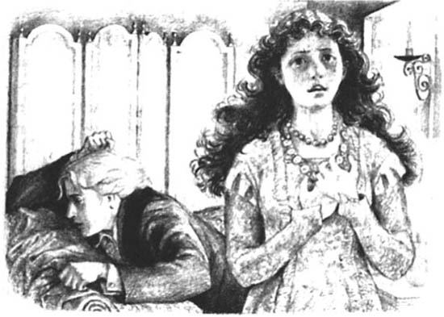

Listen to Part 1:

Ở nhà hát
Tối hôm đó, Harry, Basil và Dorian đã tới nhà hát. Basil không vui khi Dorian sắp cưới một nữ diễn viên. Nhưng ông có thể thấy rằng Dorian hạnh phúc.
Ông Isaacs, quản lý nhà hát, đã gặp ba người bạn ở bên ngoài một nhà hát nhỏ bẩn thỉu. Dorian nghĩ ông ấy là một gã đàn ông tồi tệ. Nhưng Harry lại thích ông.
Bên trong nhà hát, rất nóng nực và đèn sáng trưng. Có một dàn nhạc đang chơi một bản nhạc nào đó nhưng rất tệ. Nhiều nam nữ thanh niên cười đùa và la hét với nhau. Harry quan sát nhà hát bẩn thỉu và ồn ào. 'Thật lạ khi gặp người yêu của mình ở một nơi như vậy!', anh ta nói một cách cay độc.
Nhưng Basil trả lời nhẹ nhàng với Dorian.
'Đúng, là lạ thật,'
ông nói. 'Nhưng tôi rất mừng vì anh tới đây. Sibyl đã khiến anh thật hạnh phúc.'
'Ô, vâng,' Dorian đáp. 'Tôi rất tiếc là dàn nhạc lại tệ đến thế,' anh nói thêm. 'Nhưng lát nữa anh sẽ được gặp Sibyl.'
Listen to Part 2:
Một lát sau, vở kịch bắt đầu. Và không lâu thì mọi việc bắt đầu trở nên tồi tệ. Sibyl Vane rất dễ thương, nhưng diễn rất tệ. Tối đó, cô ấy đã trở thành một diễn viên thật kinh khủng.
Khán giả bắt đầu hét lớn với các diễn viên. Một số người rời khỏi nhà hát. Người quản lý có vẻ rất tức giận. Basil và Harry không muốn xem vở kịch. Và mặt của Dorian tái nhợt hẳn đi.
Harry nhặt áo khoác lên rồi đứng dậy. 'Cô ấy rất đẹp, Dorian ạ,' anh ta nói. 'Nhưng cô ấy chẳng thể diễn được. Chúng ta đi thôi.'
'Anh rất tiếc vì đã nhờ anh đi cùng,' Dorian nói.
'Có lẽ Sibyl bị ốm,' Basil nói nhẹ nhàng. 'Thế thì anh sẽ tới lần khác vậy.'
'Không,' Dorian đáp lại, 'cô ấy không bị ốm. Tối qua cô ấy đã là một diễn viên tuyệt vời. Tối nay thì cô ấy diễn tệ lắm. Cô ấy chẳng giống ai cả.'
'Đừng nói như vậy!' Basil hét lên. 'Cô ấy là người anh yêu mà! Cùng đi thôi, Dorian. Chúng ta đi nào.'
Nhưng Dorian không chịu rời khỏi nhà hát. 'Cút ngay, để tôi ở lại một mình nào!' ông nói. 'Tôi cần ở một mình.'
Basil và Harry rời khỏi nhà hát. Vở kịch diễn ra ngày càng tệ đi. Hầu hết mọi người đã rời khỏi nhà hát và về nhà.
Khi vở kịch kết thúc, Dorian tới gặp Sibyl. Anh tới gặp cô trong phòng thay đồ ở phía sau sân khấu. Anh rất đau khổ và tức giận. Anh đã nói với Harry và Basil rằng Sibyl là một diễn viên tuyệt vời. Họ tới xem cô ấy diễn và tối đó thì cô ấy diễn thật kinh khủng.
Listen to Part 3:
Nhưng khi Dorian nhìn thấy Sibyl, cô có vẻ tươi tắn. Cô nói chuyện vui vẻ với anh. 'Ôi anh yêu ơi, tối nay em đã diễn thật tệ.'
'Trước khi anh gặp em, em đã từng là một diễn viên giỏi. Em đã từng phải giả vờ mình đang yêu khi đóng Juliet. Giờ thì em không còn phải diễn nữa. Em đang yêu. Em không muốn diễn nữa. Thật là tuyệt đúng không hả anh! Anh hãy đưa em khỏi nơi này. Chúng mình sẽ cùng bỏ trốn cùng nhau.'
Nhưng Dorian không nhìn Sibyl. Anh chạy lại chiếc ghế bành lớn. Anh ngồi xuống và gục đầu lên hai cánh tay. 'Em đã giết chết tình yêu của anh dành cho em rồi,' anh thì thầm. 'Anh đã tưởng em là một diễn viên xuất chúng. Em đã diễn vai những người phụ nữ tuyệt vời. Anh yêu em vì em thông minh và quyến rũ. Giờ thì em chỉ là một con ngốc thôi.'

'Anh không nói thật đâu, đúng không?' Sibyl run giọng nói.
'Ôi Chúa ơi, mình thật ngu ngốc khi yêu anh,' Dorian nói.
'Ôi anh, hãy nói rằng anh yêu em,' Sibyl khóc. 'Hôn em đi. Em sẽ làm bất cứ điều gì vì anh! Em sẽ diễn nữa. Em sẽ diễn thật giỏi vì anh!
Sibyl ngã xuống sàn nhà và khóc lóc thảm thương.
Dorian liếc cô một cái. Rồi anh nói. 'Anh sẽ đi đây,' anh ta nói khẽ. 'Anh không muốn làm em tổn thương, nhưng anh không muốn gặp em lần nào nữa.'
Dorian rời khỏi nhà hát và Sibyl gục ngã khóc lóc dưới sàn.